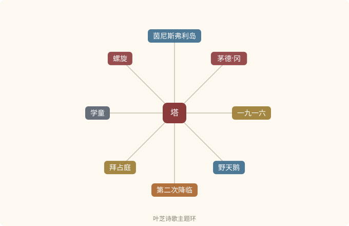

叶芝诗选
一、基本信息
| 作者 | 叶芝 |
|---|---|
| 成书/出版 | 诗作于1886—1939年间；通行选集百余首 William Butler Yeats — Encyclopaedia Britannica（百科全书） |
| 国别/地区 | 爱尔兰 |
| 时代 | 近代 · 19世纪末—20世纪 |
| 体裁 | 诗选集 |
| 语言 | 英语 |

叶芝诗歌主题环（人物关系图）
二、创作背景
本库以'选集'立目：通行选本篇目大体含《茵尼斯弗利岛》《当你老了》《库尔的野天鹅》《一九一六》《第二次降临》《驶向拜占庭》《在学童中间》《丽达与天鹅》《长脚蚊》等（选目因版本而异，逐版本待核）。
Britannica（Yeats 条）：'The Lake Isle of Innisfree''Easter, 1916''The Wild Swans at Coole''The Second Coming'（with 'Things fall apart; the centre cannot hold'）与'Sailing to Byzantium'（Britannica 列举 famous poems——含'That is no country for old men'出处）。
三、内容脉络
早期（凯尔特浪漫主义）：《茵尼斯弗利岛》——'我现在就要动身离去，去茵尼斯弗利'（原文意，公有领域）；《当你老了》——献给茅德·冈（通说）。
中期（爱尔兰政治）：《一九一六》——'一种可怕的美已经诞生'（原文意，公有领域）；《库尔的野天鹅》。
晚期（象征与暴力）：《第二次降临》——'万物崩解；中心无法维系，唯有混乱漫溢于世'（原文意，公有领域）；《驶向拜占庭》——'那不是老年人的国度'（原文意，公有领域）；《在学童中间》——'跳舞的身体与跳舞的眼睛'（原文意，待核）。
《丽达与天鹅》：神与人的'暴力受孕'——特洛伊战争的起点（通说）。
四、主要人物表
| 人物 | 身份 | 说明 |
|---|---|---|
| 茅德·冈 | 革命者·终身恋人 | 多首情诗的受赠者（通说） |
| 叶芝的自我 | 老人·诗人 | 《驶向拜占庭》的'远离老年人的国度'（通说） |
五、主题与艺术特点
- 爱尔兰民族与神话（Britannica：Irish Literary Theatre 源）。
- '可怕的美'：暴力与诞生的悖论（通说）。
- 老与艺术的搏斗：晚年诗的'粗粝'力量（Britannica：greatest work came late）。
- 艺术特点：象征体系（塔、螺旋、拜占庭）、形式的精确（通说）。
六、影响与评论
- Britannica（Yeats 条）：1923诺奖——首位爱尔兰获奖者；'greatest work came late'（《塔》《盘旋的楼梯》）。
William Butler Yeats — Encyclopaedia Britannica（百科全书） - 《第二次降临》'Things fall apart; the centre cannot hold'——被阿契贝取为书名（B106）、政治语汇通用引用（Britannica）。
Chinua Achebe — Encyclopaedia Britannica（百科全书） - 艾比剧院与爱尔兰文学复兴（Britannica）。
William Butler Yeats — Encyclopaedia Britannica（百科全书）
七、阅读建议
难点
- 象征体系（螺旋/塔/月相）需要《幻象》背景（通说待核）。
- 政治诗的语境（复活节起义）需要注释。
- 袁可嘉译《叶芝诗选》（人民文学出版社，通说待核）：通行本。
- 英文本：The Collected Poems of W.B. Yeats（通说待核）。
先读《当你老了》《茵尼斯弗利岛》→ 《一九一六》《第二次降临》→ 《驶向拜占庭》《在学童中间》。
八、待核实
- 选本篇目因版本而异（袁可嘉译本目录逐版本核对）。
- 引文逐字核对照通行译本。
- 《幻象》体系研究文献待核。
- 袁可嘉译本出版信息待核。
本页主要来源
叶芝的其他收录作品：叶芝诗选